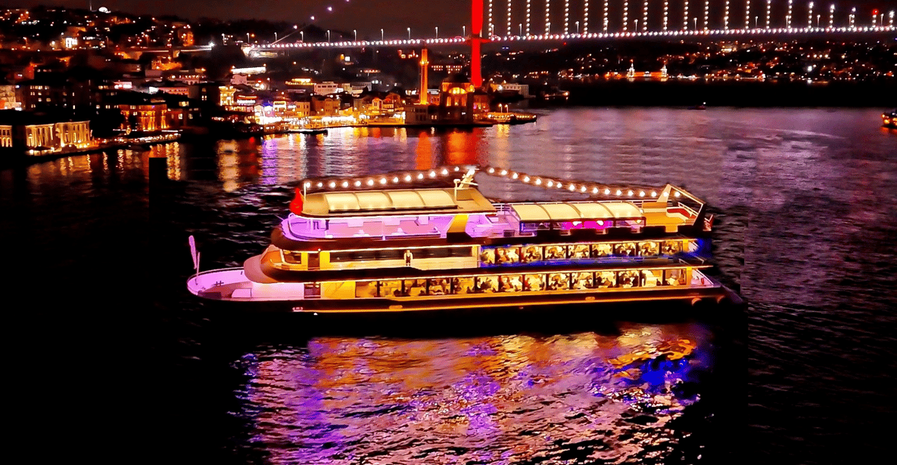

Istanbul: Bosphorus Dinner Cruise & Show with Private Table
Take in sights of the Bosphorus on board a mega yacht. Enjoy the city view with a 3-course meal while you listen to live music and watch stage performances at private tables.
Highlights
- Dinner on a mega yacht on the Bosphorus
- Sail through two continents and see historical sights on Bosphorus
- Watch dancers perform Turkish folk dancing and Latin flamenco
- Snap selfies on a yacht with the Bosphorus and Istanbul in the background
- Discover the secrets of the Bosphorus with a mobile audio guide
Enjoy magical views of Istanbul from the Bosphorus on this dinner cruise. Sail on a yacht and watch a show with traditional Turkish folk dancing. Enjoy dinner and drinks while seeing sights like the Dolmabahçe Palace, the Galata Tower, and the Bosphorus Bridge.
Choose from a cruise with hotel pickup and drop-off from Istanbul via an air-conditioned van or meet directly at the port. Enjoy drinks like Turkish coffee, tea, unlimited soft drinks, and unlimited alcoholic drinks (depending on option selected). Pick between a standard meal or a VIP option.
Savor an appetizer plate with options like a seasonal salad or hot starters. Choose a main course like mixed grilled meat, seasonal fish, or a vegetarian menu. Finish your meal with a sweet dessert.
Dine on your tasty food while watching live entertainment like Turkish folk dancing, Latin flamenco dancing, and a DJ. Gaze out the window at the imposing Galata Tower and Maiden's Tower, which has stood since the medieval Byzantine period.
Enjoy Live shows such as Dervishes, Turkish dances, Latin dance, flamenco, Sirtaki, and belly dance in the middle of the Bosphorus.
During the tour, you can learn details about the places you're curious about through the mobile audio guide app. On the day of the tour, contact your tour provider to find out more about using the audio guide.
Capture pictures of the Baroque Revival architecture of Dolmabahçe Palace and the Ortaköy Mosque. Admire the Bosphorus and Fatih Sultan Mehmet Bridges which span the Bosphorus strait. Take in the waterside Ottoman architecture of the Beylerbeyi Palace.
Book Bosphorus Dinner Cruise & Show in Advance to Guarantee Seating
For bookings and more information, please contact us:
Email: info@whirlingdervishes.com
Phone: +90 123 456 7890